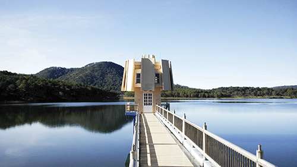
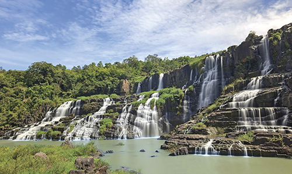
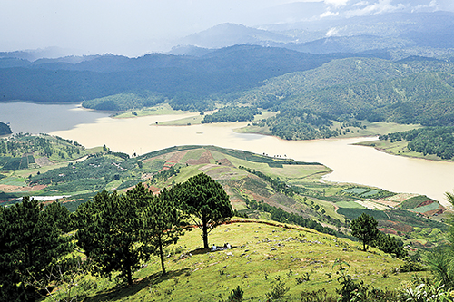

Tây Nguyên - Vùng đất không chỉ có nắng và gió
Nhắc đến Tây Nguyên, người ta hay nghĩ đến một vùng đất hoang sơ, đầy nắng và gió, với những con đường đất đỏ khúc khuỷu, hiểm trở. Nhưng vùng đất này còn có nhiều điều thú vị, đủ sức hấp dẫn những bước chân du khách ưa chinh phục và khám phá.
Với diện tích tự nhiên hơn 50 ngàn km2 (chiếm hơn 16% diện tích cả nước), Tây Nguyên bao gồm 5 tỉnh Đắk Nông, Đắk Lắk, Gia Lai, Kon Tum, và Lâm Đồng. Vùng đất này sở hữu những nguồn tài nguyên du lịch hết sức đa dạng và độc đáo. Đến với Tây Nguyên, thực sự là một dịp để du khách trở về với thiên nhiên hùng vĩ, khám phá những cánh rừng nguyên sinh với đa dạng động thực vật. Với quá trình kiến tạo địa chất đã tạo nên một địa hình đa dạng, từ các vùng núi cao đến những cao nguyên, bình nguyên rộng lớn, kết hợp với những thung lũng giữa các dãy núi cùng với 04 hệ thống sông chính gồm Thượng sông Xe Xan, sông Ba, sông Serepok và sông Đồng Nai. Kiến tạo địa chất đã tạo nên cho vùng đất này nhiều sông, hồ và đặc biệt là những thác nước hùng vĩ giữa những cánh rừng xanh bát ngát. Tiêu biểu có thể kể đến thác Trinh Nữ ở Đắk Nông, thác Thủy Tiên, Đray Nur, Đray Sáp của Đắk Lăk, Xung Khoeng, Phú Cường của Gia Lai, Thác Đambri, thác Pongour, Thác Prenn (Lâm Đồng),... Ngoài ra, còn một hệ thống các hồ nước tự nhiên trải khắp khu vực, kết hợp với những cánh rừng tạo khung cảnh hết sức thơ mộng như Biển Hồ hay còn gọi là hồ Tơ Nưng (Gia Lai), hồ Lắk, hồ Ea Nhai, hồ Ea Súp (Đắk Lăk), hồ Tuyền Lâm (Lâm Đồng),...
 Với khí hậu trong lành, mát mẻ quanh năm, đặc biệt, vào cuối năm, khí hậu Tây Nguyên trở lạnh với nhiều gió, khí hậu hết sức phù hợp cho du khách thực hiện các chuyến đi của mình. Với đặc trưng thổ nhưỡng là một vùng đất đỏ bazan rộng lớn, màu mỡ phù hợp với việc canh tác các cây công nghiệp. Chính điều kiện này đã hình thành nên những cánh rừng cao su, cà phê, chè bạt ngàn. Đây cũng là một điểm thu hút du khách. Tháng 11 đến tháng 03 hàng năm là thời điểm Tây Nguyên đẹp nhất, thú vị nhất. Đây cũng là thời điểm mùa khô, nắng vàng và thuận lợi cho việc di chuyển và tham quan. Vào thời gian này, thiên nhiên nơi đây như từng bước thay cho mình những màu áo mới. Tháng 11, sẽ là mùa của những bông hoa dã quỳ vàng rộn, nở khắp các ngả đường. Tháng 12, tháng 01, những cánh rừng cao su thay lá như một bức tranh thiên nhiên tuyệt đẹp với những mảng màu tự nhiên, màu lá ngả vàng úa, rồi đỏ rực, rồi lại xanh ngát nhẹ nhàng. Tháng 03, mùa nắng vàng như mật trong không khí se se lạnh thú vị, cũng là mùa hoa cà phê trắng muốt, tinh khôi, bồng bềnh. Chắc chắn đây sẽ là những trải nghiệm làm phong phú thêm chuyến đi của du khách. Và bạn đừng quên thưởng thức hương vị cà phê nơi đây. Mỗi vùng đất lại có một loại cà phê khác nhau, với hương vị, độ mạnh nhẹ khác nhau. Nhưng tất cả đều đặc biệt và độc đáo. Hãy trải nghiệm để chọn cho mình một hương vị phù hợp nhất. Đặc biệt, ở Tây Nguyên, người ta có thể uống cà phê từ sáng đến tối, việc uống cà phê như một nếp sống thường nhật.